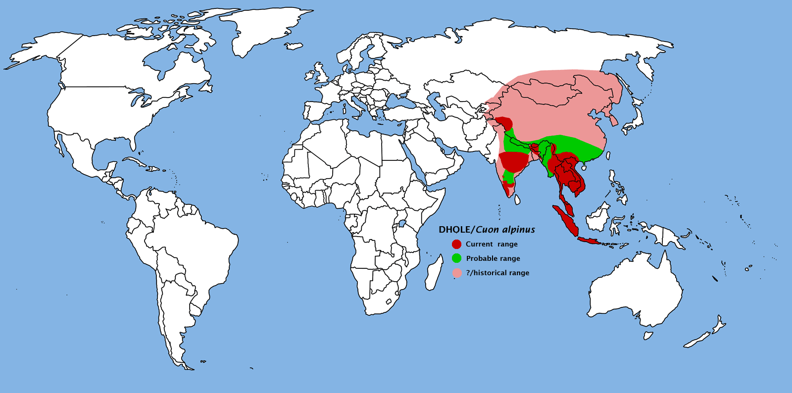
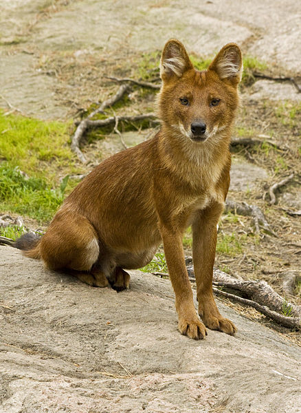
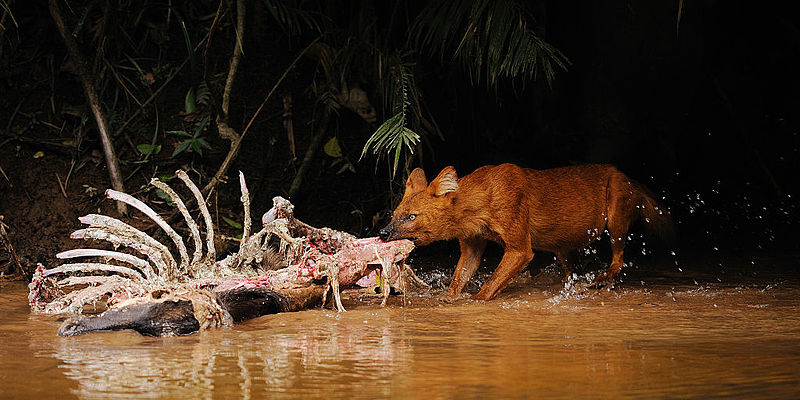

The Dhole is one of major predecessors of the common dog and Gray Wolf. As of May 2016, there are an estimated 2,500 left in the wild
The Dhole's historic range was extending from Indonesia to southern Russia to the eastern edge of Uzbekistan. However, the Dhole has been receded to three different areas: the south-western forests of China, eastern India, and the Indochinese Peninsula and Malaysia. Current estimates state that it's habitat could be reduced to north-eastern India and southern China. Most of it's current habitat is some form of deciduous forest, whether it is extremely dry or a dripping rainforest. It can also be found in large meadows and flat steppes. The plants that are within the biome include bamboo, the Durian, and the Kapok tree. The Dholes are currently heavily emigrating, as they are currently being driven out of their natural habitat.
 Author: TBjornstad
Author: TBjornstad
The Dhole is typically rust colored and has a slender appearance, with slim legs and a long backbone, it's been said that it looks like common hyenas. The Dhole is characterised as smaller and stouter than it's descendants. Male Dholes are usually 40 pounds, and the females are usually about 30 pounds. They are also usually 16-22 inches at shoulder height and 3 feet in length. Some of the unique adaptations that the Dhole has are a short,thick jaw and one less tooth on both sides of it's lower jaw.
 Author: Johan Spaedtke
Author: Johan Spaedtke
The Dhole is classified under: Kingdom: Animalia Phylum: Chordata Class: Mammalia Order: Carnivora Family: Canidae Genus: Cuon Species: C. alpinus
The Dhole is an omnivore and a tertiary consumer. They usually hunt low-level prey such as deer and pigs, but on occasion and with enough pack members they are able to take down larger prey such as a wild cow called the Gaur. If there is not enough meat to go around they will seek out wild fruits, such as wild apples and hawthorn. An example of a food web is the Dhole on top, followed by the monkey, followed by insects that the monkey eats, finalised by the dead carcase the insects ate.
 Author: Tontan Travel
The Dhole reproduce about every year or so. Their reproduction is K-type, usually bearing up to 16 pups per pregnancy. The average gestation period is about two months and the weaning period is about the same length, give or take a few days.
There are many prominent threats to the Dhole which include:
Currently, there is under-sufficient protection for the Dhole. The current legal protection of the Dhole is in the following: